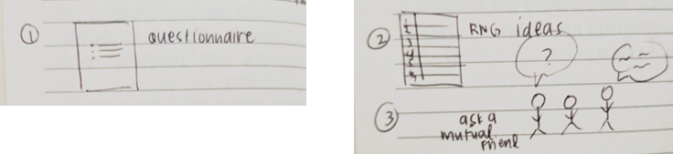
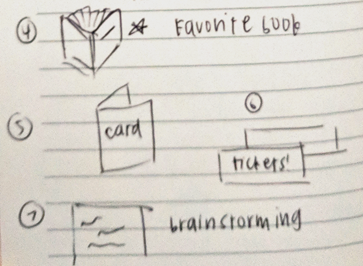
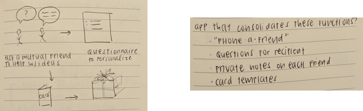
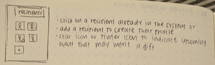
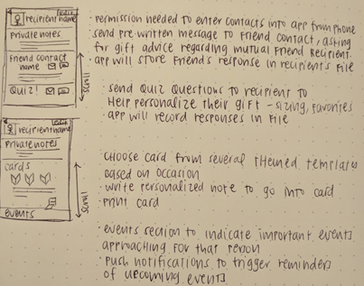

Overview
Christmas is a time of family, friendship, and togetherness. Part of this traditional experience is the act of sharing and receiving gifts.
Right after Christmas, I was challenged to design a meaningful and useful gift-giving experience for a partner, as part of the Springboard UX Design course curriculum. The whole experience ranged from the time they realized they needed to give a gift, thinking of what gift to give, why they wanted to give that gift, purchasing or making it, giving it, to finally receiving gratitude (or not).
The exercise hinged on interviewing friends about their recent gift-giving experiences. My goal was to understand their motives, goals, and desires to revamp the process for them - exactly what user-centered design thinking is all about.
Objective:
Propose an alternative gift-giving experience to a friend and test out whether or not it meets their needs.
Research
What I wanted to explore:
- How they felt about the last Christmas present they gave
- How they selected the gift
- How they bought the gift (online, in store) and why they chose that method
- What aspects of gift-giving they felt strongly about
- What reactions they received from the gift recipient
- If those reactions aligned with their expectations upon purchasing the gift
- What they could have done differently to get a more positive reaction from the recipient
User interview insights
I interviewed two friends regarding the gift-giving process and found some interesting tidbits regarding their behaviors, fears, and goals.
Behaviors:
- Gift-givers preferred buying online rather than in-store.
- Gift-givers found it more enjoyable to give a gift to someone they knew well, as they could customize or personalize the gift without fear.
- Gifts chosen from a wishlist elicited more neutral reactions. Interview participants admitted the gifts weren't the most thought-out.
Fears:
- Gift-givers wanted to avoid disappointing the recipient by giving them something they didn't want. To mitigate this fear, gift-givers chose items from recipient's wishlist.
Goals:
- Gift-givers liked giving small tokens of appreciation in addition to the "main" gift.
- Gift-givers felt more involved when they were able to give a gift a more personal touch.
- Gift-givers wanted to be original and personal in their gift selection in order to generate goodwill.
- Gift-givers wanted to feel camaraderie and a personal, emotional connection through sharing gifts.
- Gift-givers wanted to capitalize on existing shared feelings/experiences to make the gift feel more thoughtful (something the recipient couldn't have thought of or gotten for themselves).
Problem Statement
Steven needs a way to come up with gift ideas for new friends, because he feels more fulfilled when he gives a gift that will provide the excitement of something the recipient the recipient didn't know they wanted/needed.
Steven doesn't want to disappoint the recipient with something they don't want. He derives joy from the thought of a friend opening up a present to find something they weren't expecting. He appreciates any opportunity to add a personal touch to the presents he gives.
Ideation
I spent 4 minutes to quickly craft potential solutions to the problem statement. Knowing I only had a few minutes, I focused on quantity rather than the quality of my solutions.

I ended up with 7 ideas: a questionnaire for the recipient, a random-number generator to select an gift idea from a pre-generated list, asking a mutal friend for help, sharing a favorite book, writing a card, tickets to a cool shared experience, and a brainstorming session.

Capturing feedback
I spent some time listening to my partner's feedback. He went through each of the options I presented, giving his feedback on each one. I resisted the urge to defend any of my ideas, instead keeping my mind open to what he was telling me. By restricting myself to only listening, I was able to learn about his feelings and motivations.
I gathered the following insights from our quick feedback session:
- He found it important to tailor the gift/experience specifically to the recipient, so any sort of randomized option wouldn't be as meaningful for him.
- His goal was to maximize value.
- He judged a gift's success by how useful it was to the recipient.
Solution:
While he liked several of the ideas, he mentioned that he'd feel more comfortable with the solution if it incorporated multiple ideas for their collaborative strength.
Design
I spent 10 minutes combining several of my ideas and created low-fidelity wireframes for a gift-giving mobile app. It would consolidate the "phone-a-friend", recipient questionnaire, and personalized card functions while also incorporating private notes about each recipient.

A user would be able to add various recipients, indicate upcoming events where gifts were necessary, and send pre-written messages to mutual friends asking for gift advice for the recipient. The friends' responses would be stored in the appropriate Recipient file.

The user could send various questions to the recipient to help personalize their gift - clothing sizes, favorite color, favorite patterns, and more. All responses from the recipient would also be stored in their file.
The user could also choose a card from several themed templates, based on the occasion: birthday, Christmas, farewell, etc. After selecting a card design, they could write a personalized note for the card and print it out.

An events section would allow users to input important events approaching for each recipient. Push notifications would trigger reminders of upcoming events.
Results
My partner found it easy to understand how the Recipients tab worked, since it was a simple and minimalist design. He found that including only relevant info such as recipient name and private notes on the page was a thoughtful design decision. He also asked if there would be a group capability (for Secret Santa exchanges and such).
He noted that the real value of the app was in the pre-written questions from the questionnaire.
He felt that the Recipient page had too much content on it, and that scrolling was inefficient. He suggested that the Recipient page could have a list of steps with everything auto-collapsed. Steven also suggested that text messages were sufficient to communicate with the mutual friends and recipient, so it felt redundant to go through the app for those features.
He suggested that if a recipient was a near-stranger, having the ability to find who their friends are (through the app) and being able to contact them would be pretty valuable to him.
One helpful aspect he pointed out was that the "Add Recipient" icon should be on the top of the page, so it wouldn't get pushed down too far after adding multiple recipients.
Key Takeaways
This challenge was my first experience engaging with and testing with a real person in regards to UX design. Working directly with the user and intentionally leaving myself vulnerable to their unfiltered feedback had its pros and cons.
Showing unfinished work to another person was intimidating. I found it difficult to swallow criticism delivered face-to-face rather than in text format, where they may have been more cautious with their wording.
However, the process made it easier and quicker to toss out ideas that didn't work for the user. I really appreciated the feedback I received during prototype testing, since it enabled my understanding of where the user saw value in the app and what felt redundant for him.
This challenge's quick pace felt a little frenzied, but I enjoyed having the time limit. It let me truly boil the process down to what the user needed. I'd never designed an application before, so I didn't have a basis for comparison in terms of speed.